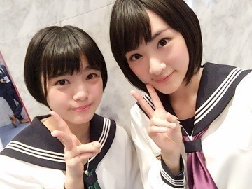
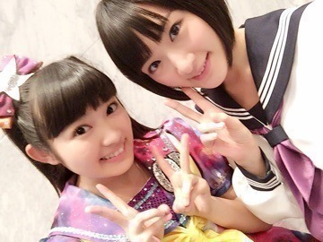
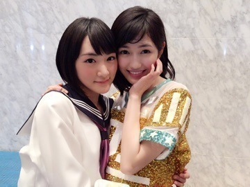
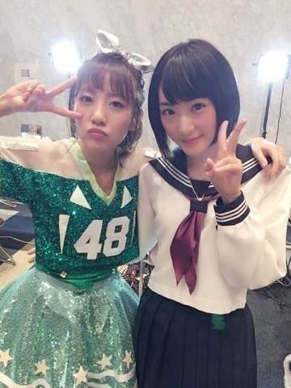

| 2015/12 16 Wed | 乃木坂もよろしくね ヽ(・∀・)ノ |
今日はFNS歌謡祭でしたヽ(・∀・)ノ
史上初のアイドルコラボメドレーヽ(・∀・)ノ
こういうものに乃木坂46も参加出来て凄く嬉しかった！
AKBさんと会いたかったを歌わせて頂いたのですが、
デビューシングルのぐるぐるカーテンのカップリングで
会いたかったかもしれない
とちょっとタイトルと曲調をアレンジして歌っていたあの時。
今同じステージで歌っていたんです。
凄い事だなって震えました！！
久しぶりに制服のマネキンもテレビで歌いました！
しかも、欅坂46生放送初お披露目しましたヽ(・∀・)ノ

平手ちゃんよく頑張りましたよしよし

AKB48に兼任した時先輩を知り、松井玲奈さんも乃木坂46に沢山教えて下さいました。
二期生とはまた違う妹分。
これからもよろしくねヽ(・∀・)ノ
あと、ヘビロテでペアで歌った私立恵比寿中学は柏木ひなたちゃんとヽ(・∀・)ノ

きゃわわ

生駒ちゃんを推しメンって言ってくれたよ(´；ω；｀)
お友達になりましたヽ(・∀・)ノ
また一緒にパフォーマンスしたいなぁヽ(・∀・)ノ
今日は色んな方とお友達になりましたヽ(・∀・)ノ
明日以降もオフショット載せていきますね〜ヽ(・∀・)ノ

まゆゆ天使ヽ(・∀・)ノ

久しぶりに高みなさんと⭐︎⭐︎
偉大な方です。
高みなさんみたいな人間になりたいなぁ。
もっと頑張らないとね！！
ではっ
へばなっ☆彡
コメント(406)
2015/12/16 23:18